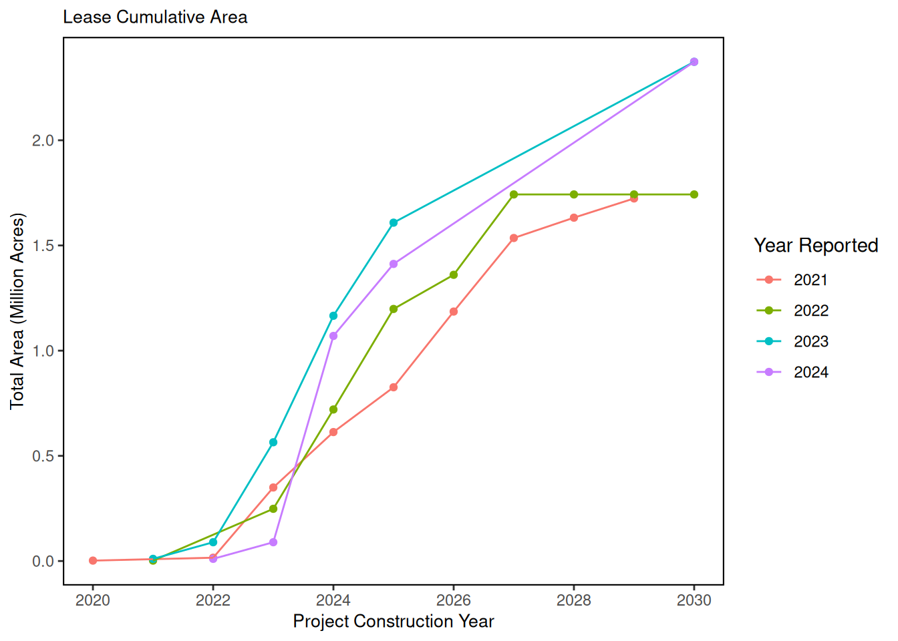

83 Speed and Scale of Offshore Wind Development in the Northeast
Last updated April 02, 2026
Description: The footprint and timeline of offshore wind development in the Northeast by 2030
Contributor(s): Angela Silva
Affiliations: NEFSC
Indicator Family:
Indicator Category:
Synthesis Theme:
83.1 Introduction to Indicator
The data presented here is a timeline of proposed construction in the Northeast of offshore wind development projects to 2030. The lease area color corresponds to the year of proposed development. Project component data (e.g., number of foundations, cable miles, GW, and acreage for each project are described in the table). Areas currently under planning for additional lease areas are outlined in red and totals reflected in the bottom of the table. This information is up to date as of December 2023 and project statistics come from Appendix E3 of the Revolution Wind Final Environmental Impact Statement Table E-1. This indicator does not reflect potential changes to schedules from recently terminated Power Purchase Agreements for some projects (Ocean Wind 1 and 2, Empire Wind 2, and Skipjack Wind).
83.2 Key Results and Visualizations
The colored chart below also presents the offshore wind development timeline in the Greater Atlantic region with the estimated year that foundations would be constructed (matches the color of the wind areas). These timelines and data estimates are expected to shift, but represent the most recent information available as of July 2023.

Mid-Atlantic

New England

83.3 Implications
NA
83.4 Indicator statistics
Spatial scale: Greater Atlantic region
Temporal scale: NA
Variable definitions
83.5 Get the data
Point of contact: Angela Silva (angela.silva@noaa.gov)
ecodata dataset: ecodata::wind_dev_speed
Tech Doc link: https://noaa-edab.github.io/tech-doc/wind_dev_speed.html
83.5.1 Public Availability
Source data are publicly available.